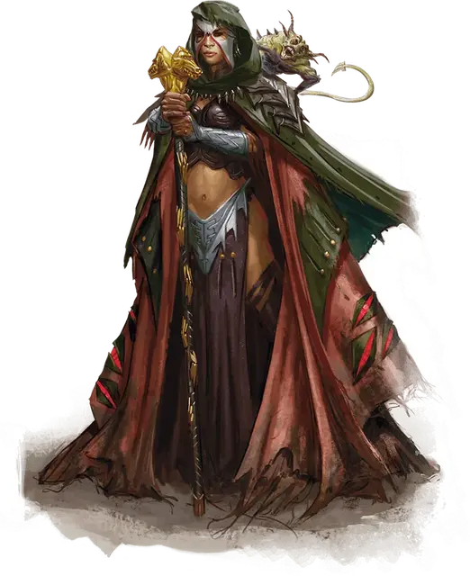

Колдун Исчадия
Warlock of the Fiend
Средний Гуманоид (Любая раса), любое мировоззрение

Класс Доспеха 12 (15 с доспехами мага)
Хиты 78 (12к8 + 24)
Скорость 30 футов
| мод | спас | ||
|---|---|---|---|
| СИЛ | 10 | +0 | +0 |
| ЛОВ | 14 | +2 | +2 |
| ТЕЛ | 15 | +2 | +2 |
| мод | спас | ||
|---|---|---|---|
| ИНТ | 12 | +1 | +1 |
| МДР | 12 | +1 | +4 |
| ХАР | 18 | +4 | +7 |
Навыки Магия +4, Обман +7, Религия +4, Убеждение +7
Сопротивление урону рубящий от немагических атак, кроме нанесённых посеребрённым оружием
Чувства тёмное зрение 60 футов, пассивное Восприятие 11
Языки Любые два языка (обычно Инфернальный или Бездны)
Опасность 7 (2900 опыта)
Бонус мастерства +3
Среда обитания Арктика, Болото, Подземье, Пустыня
Особенности
Врождённое колдовство. . Базовой характеристикой колдуна является Харизма. Он может врождённой магией накладывать следующие заклинания (Сл спасброска от заклинаний 15) без материальных компонентов:
• Неограниченно: смена обличья [alter self], псевдожизнь [false life], левитация [levitate] (только на себя), доспехи мага [mage armor] (только на себя), безмолвный образ [silent image].
• 1/день каждое: слабоумие [feeblemind], перст смерти [finger of death], уход в иной мир [plane shift].
Использование заклинаний. . Колдун является заклинателем 17-го уровня. Его базовой характеристикой является Харизма (Сл спасброска от заклинания 15, +7 к попаданию атаками заклинаниями). Он восстанавливает свои ячейки заклинаний после короткого или продолжительного отдыха. Он знает следующие заклинания колдуна:
• Заговоры (неограниченно): мистический заряд, огненный снаряд, дружба, волшебная рука, малая иллюзия, фокусы, электрошок.
• 1–5 уровни (4 ячейки 5-го уровня): изгнание [banishment], огненные ладони [burning hands], небесный огонь [flame strike], адское возмездие [hellish rebuke], магический круг [magic circle], палящий луч [scorching ray], наблюдение [scrying], зловонное облако [stinking cloud], внушение [suggestion], огненная стена [wall of fire].
Удача темнейшего (Перезаряжается после короткого или продолжительного отдыха). Когда колдун совершает проверку способностей или спасбросок, он может добавить бросок к10. Он может сделать это после того как бросок сделан, но до того, как эффект вступит в силу.
Действия
Булава. . Рукопашная атака оружием: +3 к попаданию, досягаемость 5 футов, одна цель. Попадание: Дробящий урон 3 (1к6) плюс урон огнём 10 (3к6).
Описание
Колдуны исчадия получают свои силы от магического договора, заключенного с архиисчадием Нижних планов. Эти колдуны часто держат в качестве компаньонов бесов или квазитов, и они склонны к крайностям в поведении: якшаются с культистами–демонопоклонниками или посвящают свои жизни уничтожению демонических культов.